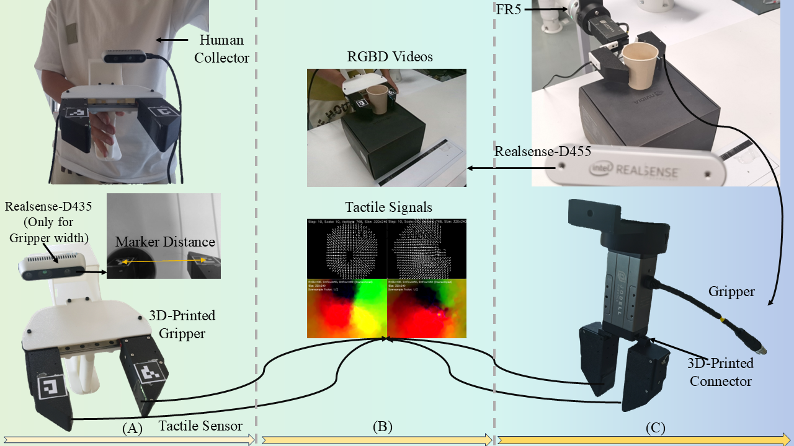
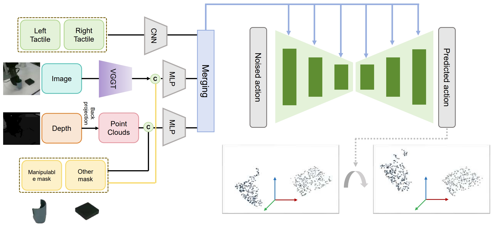
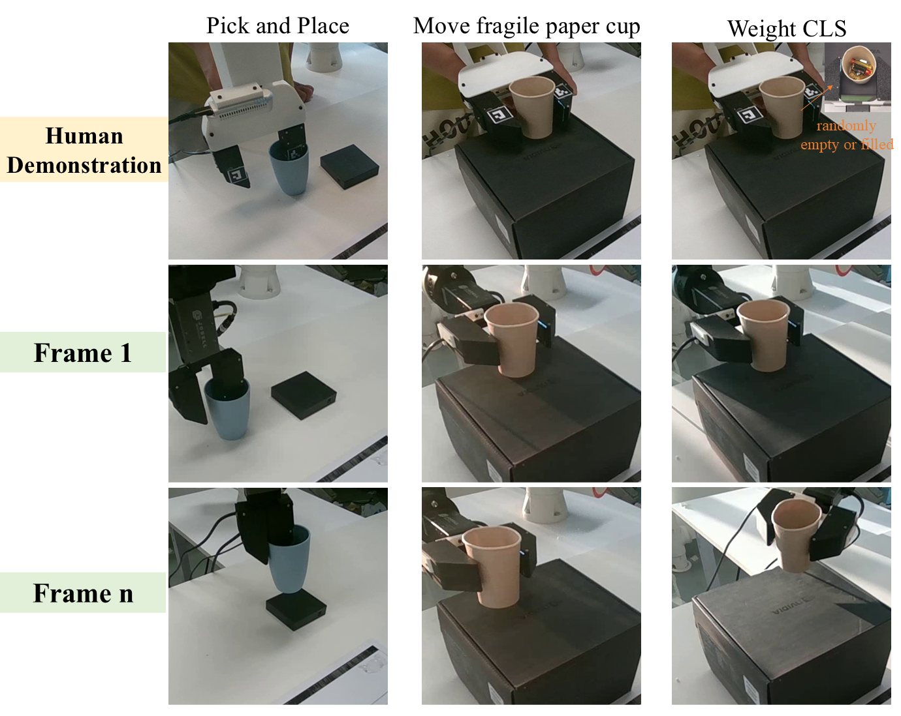

Recent advances in Vision-Action and Vision-Language Action models, such as Diffusion Policy, OpenVLA, and $\pi_0$, have significantly improved robotic manipulation by enabling robots to interpret visual information for complex tasks. However, these approaches face key limitations: collecting large-scale real-world robot data is costly and inefficient, and reliance on robot-specific internal states hinders generalization across different platforms. Moreover, existing methods often overlook the importance of direct object perception and manipulation. In this paper, we present Object-Centric Visuo-Tactile Learning (\method), a novel framework for robotic manipulation that leverages only human demonstration videos and tactile signals. Our method extracts object-centric representations and 3D object trajectories from human demonstration videos, removing the need for robot-specific demonstrations and decoupling policy learning from the robot’s morphology. Furthermore, we introduce a portable visuo-tactile data collection system, which fuses external visual object tracking with tactile force feedback to capture fine-grained object interactions. Experimental results demonstrate that \method enables more flexible, robust, and generalizable robotic manipulation by directly grounding learning in object-centric perception and multimodal interaction.
This figure illustrates the setup of our proposed framework from (A) to (C). First, Part(A) is the coordinate system representing the human-operated demonstration data collection setup. Second, Part(B) shows the different modalities of data collected during human demonstrations. Third, Part(C) is the deployment of the learned algorithm on the robot, which is trained using the human demonstration data. The video data used for training only includes observations from external cameras. The camera mounted on the handheld gripper is used solely to determine the gripper’s opening and closing status, and does not provide any trajectory information.
The right side of the framework illustrates the core architecture of the Diffusion Policy, where predicted actions are obtained by denoising the input noisy actions. The left side represents the conditioning information provided to the Diffusion Policy.The condition module processes multi-modal inputs, including tactile signals from the left and right fingers of the gripper, RGB images along with their corresponding depth maps. For the RGB input, we employ GroundingDINO and SAM2 to generate segmentation masks for relevant objects, which are categorized into a Manipulable Mask for the target object being manipulated and an Other Mask for surrounding objects. The RGB image is further processed by VGGT to extract pixel-wise dense features, from which object-level features are computed using the corresponding masks. The depth map is back-projected into a point cloud to provide 3D spatial information. These inputs are then passed through dedicated encoders to extract modality-specific features: Tactile Features, VGGT Features, and Point Cloud Features. The resulting features are concatenated and used as the condition for the Diffusion Policy.
This figure provides a visual illustration of the data and deployment process across different tasks. The first row shows the data collected during human demonstrations, where the gripper is operated by hand to perform the tasks. The second row presents the robot's initial state when the trained model is deployed, showing the first frame of execution. The third row displays the scene after the robot has executed the task for n steps.
